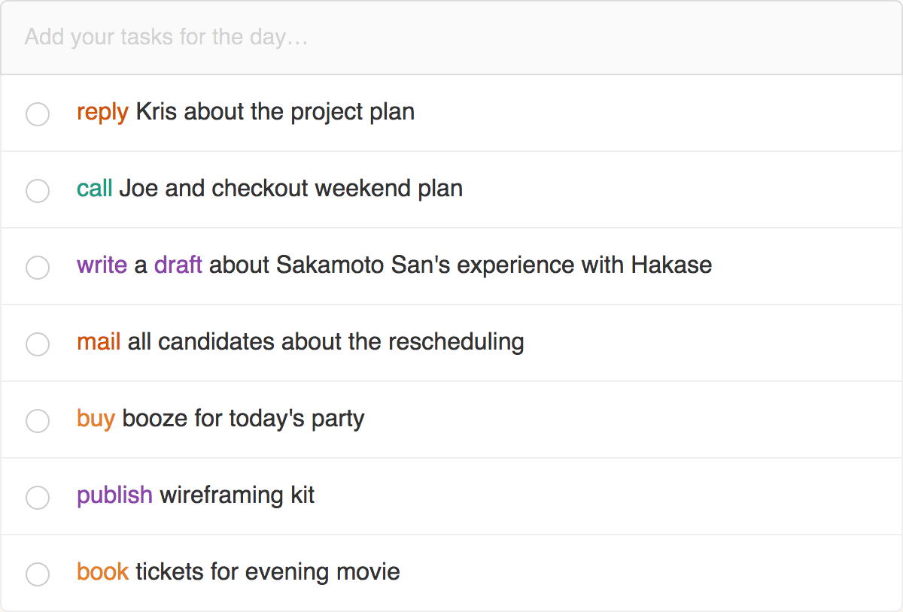
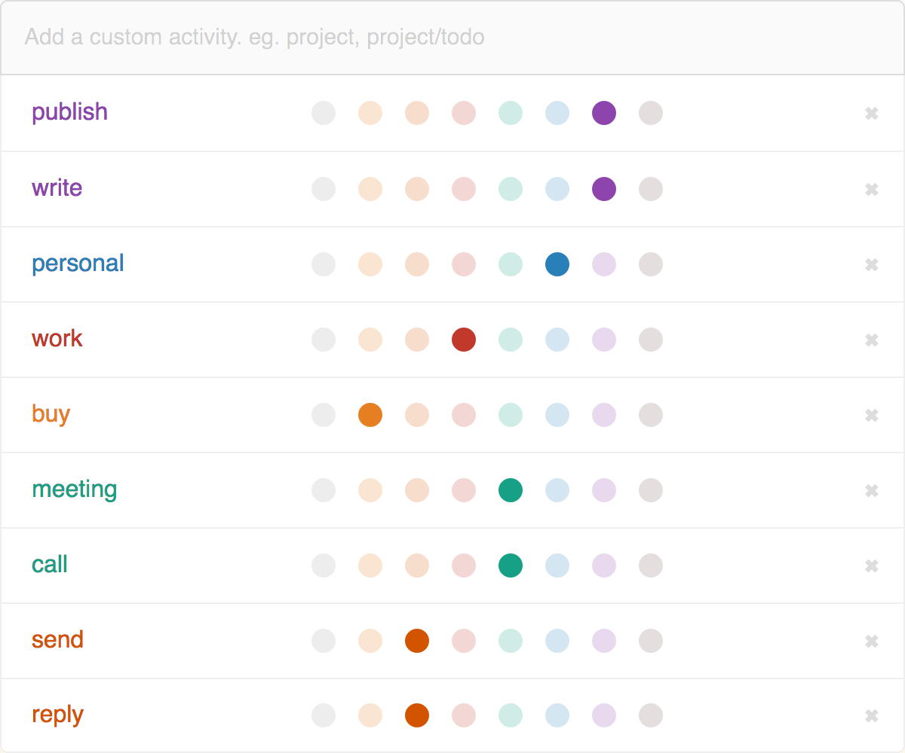

Todo Tab
A privacy first to-do app - version 2.0.0
“What's new 🎉 on version 2.0.0?”
- One of the most awaited and requested feature, the ability to create and manage custom colour codes.
- You can reorder your task list as you wish.
- If you made a typo mistake while adding the task, now you can edit the description, no more delete and re-entering
- Shows the remaining task count in tab title.
- If you have more than two completed task, todo tab will hide the rest and keep the todo list always small.
- Made urls shorten and clickable in task description.
- If you have more than five completed task, todo tab will give you option to clear all compeleted task in one go.
“Identify your tasks faster”
Todo Tab parses your task description and looks for activities (verb) like call, meeting, reply, etc. and show it in different colours. This feature improves the readability of the list and helps you to recognise as well as recall the context faster.

“Customize your colour codes”
By default Todo Tab provides and a standard set of verbs for you to start. Also, gives you the flexibility to create custom colour codings with special characters. And for the colours, the app provides a palette of 8 colours.

“Tips to make a better to-do”
To-do list helps you to offload tasks from your memory, but at the same time as the list grows it will make us gloomy. So we need to be smart building the task list.
First of all, make the to-do smaller. Because we only have limited time in a day to do it. If you have a big task on your plate, try to split it into small tasks. But when you are writing it, write it completely. Don't try to shorten it. e.g., instead of writing "call Peter", write "call Peter to finalise weekend plan". By the end of the day reevaluate your to-do list, remove the low priority tasks and add new tasks for the next day. And sleep peacefully!
“Made with love”
This tool is designed and developed by a triad called 27AE60 based out of Bengaluru, India. We as a team love developing tools and researching product ideas. We build this tool to keep us productive as well as you. Cheers!
Credits: Jaison Justus, Rabi C Shah & Suyash Katiyar.
Special thanks for writing us a feedback: Les Viragh Jr., Gary Elle, Nicole Fetscher, Kimberly Wolfson, Jake Carni, Sridhar Rajendran, Jocelyn, Arun Chandrasekaran, Sudarsh M.S and Russell Jamison
“Send us your feebacks at: hello@27ae60.com”